Sinais Simples#
O que são sinais?#
Um sinal pode ser definido como uma função matemática que representa o estado ou comportamento de um sistema físico.
Sinais#
São representados matematicamente como funções de uma ou mais variáveis independentes. Exemplo: sinal de fala, fotografia.
Introdução#
A variável independente usada para a representação matemática do sinal pode ser discreta ou contínua.
Tempo contínuo#
Sinais contínuos são definidos ao longo do tempo contínuo. São também conhecidos como sinais analógicos.
Tempo discreto#
Sinais discretos no tempo são definidos em tempo discreto e suas variáveis independentes possuem valores discretos.
Sinais digitais#
Sinais digitais são aqueles que possuem tanto a amplitude quanto o tempo discreto.
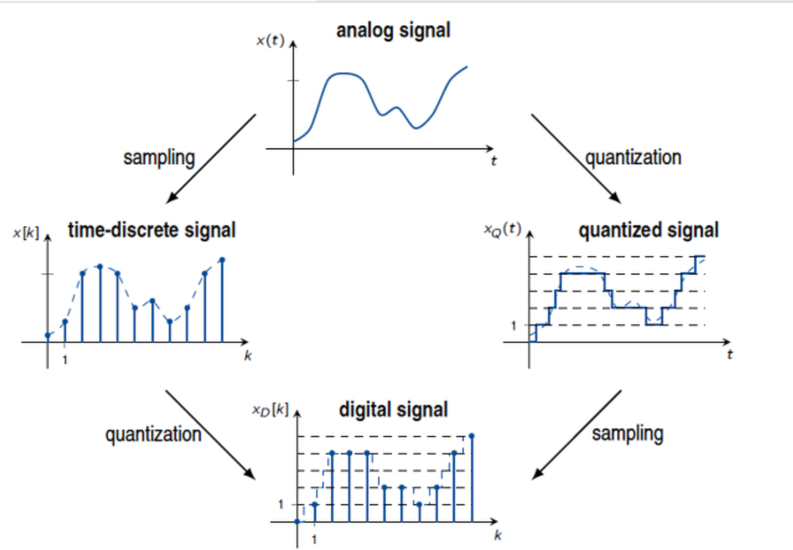
referência: https://i.stack.imgur.com/wVjge.jpg
{kind=link}
Exemplos de sinais#
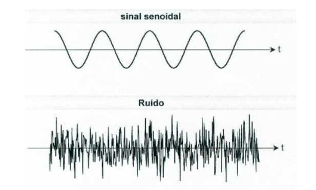
Exemplos de sinais#
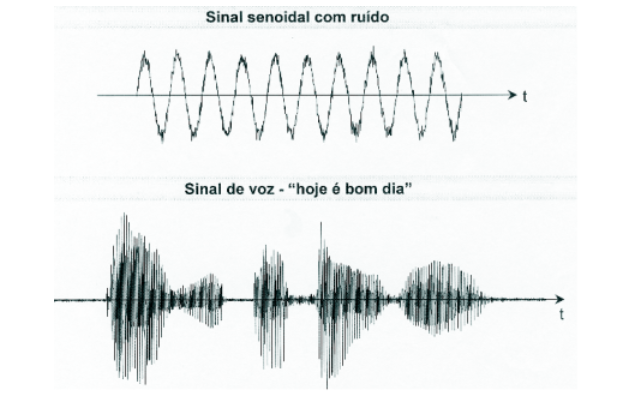
Operações com sinais#
Deslocamento no tempo#
\(y(t) = x(t-t_0)\) onde:
\(t_0 > 0 \rightarrow\) representa um tempo de atraso.
\(t_0 < 0 \rightarrow\) representa um tempo de avanço.
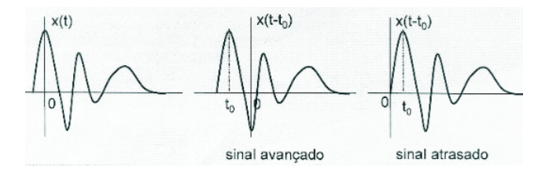
Sinais idênticos quanto à forma mas deslocados no tempo.
Operações com sinais#
Reversão do tempo#
\(y(t) = x(-t)\)
É obtido refletindo x(t) em torno da origem (\(t = 0\)).
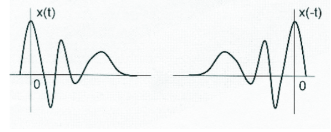
Operações com sinais#
Compressão e expansão#
\(y(t) = x(at), onde\) \(a\) é uma constante.
É obtido fazendo-se uma mudança ‘afim’ na variável independente.
se \(a > 1 \rightarrow\) o sinal é comprimido (variações rápidas)
se \(a < 1 \rightarrow\) o sinal é expandido(variações lentas)
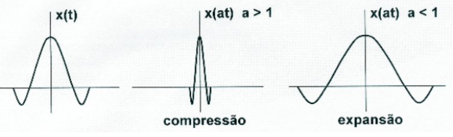
Classificação de sinais#
Sinal par#
Um sinal é chamado par se ele satisfazer a seguinte condição: \(x(t) = x(−t)\). Ou seja, \(x(t)\) é igual a sua reflexão em torno do eixo y.
Sinal ímpar#
Um sinal é chamado ímpar se ele satisfazer a seguinte condição: \(x(t) = −x(−t)\). \(x(t)\) é igual a sua reflexão em torno da origem.
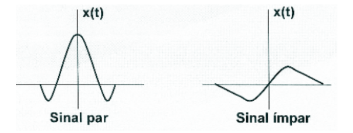
Classificação de sinais#
A parte par de um sinal:#
\(x_{e}(t) = \frac{1}{2}[x(t)+x(-t)]\)
A parte ímpar de um sinal:#
\(x_{o}(t) = \frac{1}{2}[x(t)-x(-t)]\)
Sinais periódicos#
Definição#
Um sinal é chamado periódico se existir um valor positivo T tal que: \(x(t) = x(t + T ), ∀t\). Essa condição é válida para: ±T , ±2T , ±3T , …
Período fundamental#
\(T_{0}\): menor \(T\) que satisfaz a condição acima
Frequência fundamental#
\(f_{0} = \frac{1}{T_{0}}\) ciclos por segundo ou Hertz [Hz].
\(\omega_{0} = \frac{2\pi}{T_{0}} = 2\pi f_{0}\) radianos por segundo [rad/s], pois tem-se um ciclo completo em \(2\pi\) radianos.
Sinais periódicos#
Um exemplo de sinal periódico:
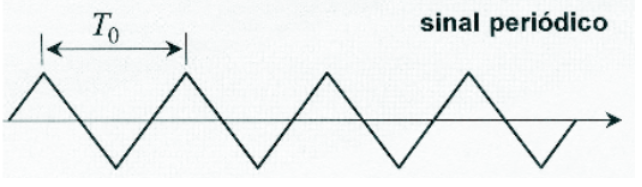
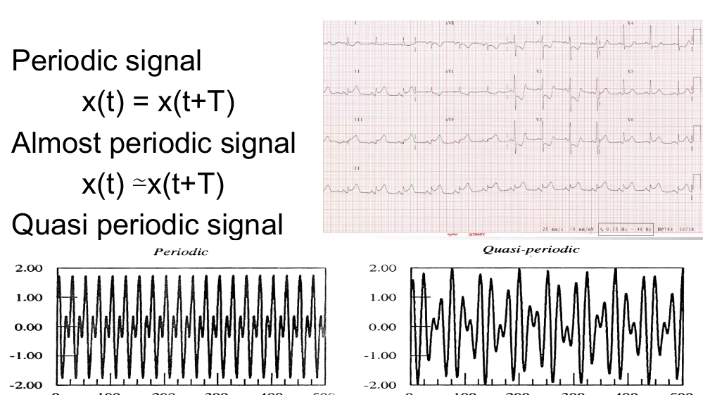
Sinais quasi-periodic
composição de 2 sinais periódicos com período \(T_0\) e \(T_1\)
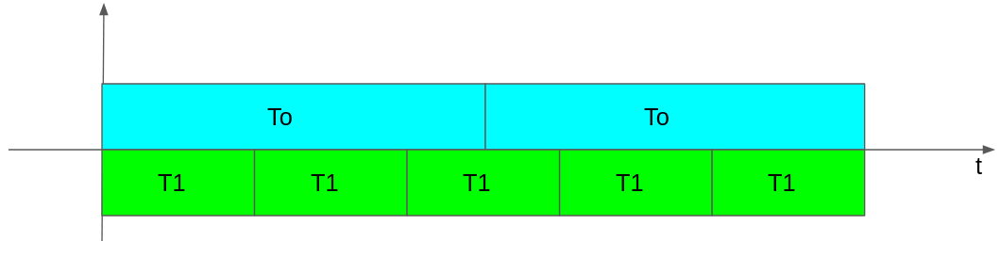
É necessário que \(N T_0 = M T_1\) então \(\frac{T_0}{T_1} = \frac{M}{N} \in Q\)
sinais quasi-periodics são periódicos e sinais almost periodic não são.
Energia e Potência de Sinais#
Definição#
A potência instantânea dissipada em um resistor é definida como:
\(p(t) = \frac{v²(t)}{R} = Ri²(t)\)A potência instantânea de um sinal em relação a um resistor de 1 ohm é: \(p(t) = x²(t)\)
Observação: É importante não esquecer que a unidade ainda permanece! Mesmo tendo simplificado a equação, o resistor não desapareceu.
As fórmulas dimensionais são:
tensão é: \(M L^2 T^{-3} I^{-1}\)
resitência: \(M L^2 T^{-3} I^{-2}\)
potência: \(M L^2 T^{-3}\)
energia: \(ML^2T^{−2}\)
onde
M → Massa, L → comprimento, T → Tempo e I → Corrente
\(V = RI\)
\(E = P*T\)
\(\dfrac{V^2}{R} = M L^2 T^{-3}\)
Energia e Potência de Sinais#
Energia de um sinal:#
\(E = \int_{-\infty}^{\infty}x²(t)dt\)
Potência média de um sinal:#
\(P_M = \lim_{x \to \infty}\frac{1}{T}\int_{-T/2}^{T/2}x²(t)dt\)
Potência média de um sinal periódico:#
\(P_M = \frac{1}{T_0}\int_{t'}^{t'+T_0}x²(t)dt\)
Raiz do valor médio quadrático (root mean square)#
É a raiz quadrada da potência média em relação a um resistor de 1 ohm que é equivalente ao valor eficaz.
Para o caso de \(x(t)\) complexo a Lei de Ohm vai ser re-escrita como:#
\(i(t) = x^*(t)/R\) e a potência instantânea será \(P_{inst} = \frac{x(t)x^*(t)}{R} = \frac{|x(t)|^2}{R}\)#
Nesse contexto, tem-se:#
\(E = \int_{-\infty}^{\infty} |x(t)|^2dt\)#
\(P_M = \frac{1}{T_0}\int_t^{t+T_0}|x(t)|^2dt\)#
Energia e Potência de Sinais#
Definição:#
Sinal de energia é aquele que: \(E < \infty\)
Sinal de potência é aquele que: \(0 < P_M < \infty\)
Cuidado: sinais periódicos não possuem energia!!!
Sinais exponenciais#
\(x(t) = Ce^{at}\), onde \(C\) e \(a\) são, em geral, números complexos
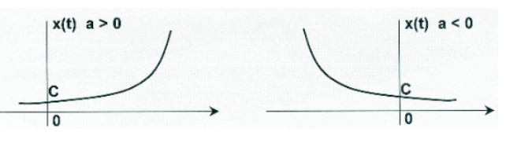
Exemplo:
Descarga de um capacitor através de um resistor
Sinais exponenciais#
A forma mais comum de exponencial complexa é realizada admitindo a um número puramente imaginário. \(x(t) = Ce^{j\omega_0t}\) onde \(C\) é admitido ser 1 e \(\omega_0\) é um número positivo. Esta função é periódica com período \(T_0\) pois:
\(x(t+T_0) = e^{j\omega_{0}(t+T_0)} = e^{j\omega_0t}e^{j\omega_0T_0} = e^{j\omega_0t}e^{j2\pi} = e^{j\omega_0t} = x(t)\)
Aplicação#
Análise de Fourier onde é definido um conjunto de exponenciais relacionadas harmonicamente tais que:
\(\phi_k(t) = e^{jk\omega_0t}\) \(\{k = 0, \pm1, \pm2,\dots\}\) \(T_k = \frac{2\pi}{|k|\omega_0} = \frac{T_0}{|k|}\)
Sinais senoidais#
A forma mais comum de se escrever um sinal senoidal é: \(x(t) = Asen(\omega_0t+\phi)\). Onde \(A\) é a amplitude, \(\omega_0\) é a frequência em (rad/s) e \(\phi\) é o ângulo de fase em radianos.
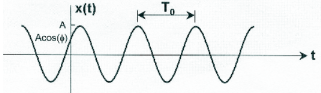
Relações de Euler#
\(e^{j\omega_0t} = cos(\omega_0t)+jsen(\omega_0t)\)
\(cos(\omega_0t) = \frac{1}{2}[e^{j\omega_0t}+e^{-j\omega_0t}]\)
\(sen(\omega_0t) = \frac{1}{2j}[e^{j\omega_0t}-e^{-j\omega_0t}]\)
Sinais senoidais exponencialmente amortecidos#
\(x(t) = Ae^{-at}sen(\omega_0t+\phi)\), em que \(a>0\)
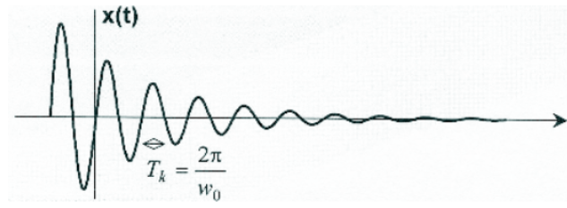
Função degrau unitário#
\( u(t)= \begin{cases} \displaystyle 1, t\geq 0 \\ \\ \displaystyle 0, t<0 \end{cases} \)
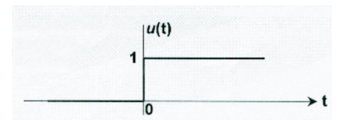